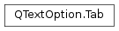

QTextOption.Tab¶
Detailed Description¶
Each tab definition is represented by this struct.
-
class
PySide2.QtGui.QTextOption.Tab¶ -
class
PySide2.QtGui.QTextOption.Tab(Tab) -
class
PySide2.QtGui.QTextOption.Tab(pos, tabType[, delim=QChar()]) Parameters: - delim –
PySide2.QtCore.QChar - tabType –
PySide2.QtGui.QTextOption.TabType - Tab –
PySide2.QtGui.QTextOption::Tab - pos –
PySide2.QtCore.qreal
Creates a default left tab with position 80.
Creates a tab with the given position, tab type, and delimiter (
pos,tabType,delim).Note
delimis only used whentabTypeisDelimiterTab.- delim –
-
PySide2.QtGui.QTextOption.Tab.position¶
-
PySide2.QtGui.QTextOption.Tab.type¶
-
PySide2.QtGui.QTextOption.Tab.delimiter¶
-
PySide2.QtGui.QTextOption.Tab.__ne__(other)¶ Parameters: other – PySide2.QtGui.QTextOption::TabReturn type: PySide2.QtCore.boolReturns
trueif tabotheris not equal to this tab; otherwise returnsfalse.
-
PySide2.QtGui.QTextOption.Tab.__eq__(other)¶ Parameters: other – PySide2.QtGui.QTextOption::TabReturn type: PySide2.QtCore.boolReturns
trueif tabotheris equal to this tab; otherwise returnsfalse.
© 2018 The Qt Company Ltd. Documentation contributions included herein are the copyrights of their respective owners. The documentation provided herein is licensed under the terms of the GNU Free Documentation License version 1.3 as published by the Free Software Foundation. Qt and respective logos are trademarks of The Qt Company Ltd. in Finland and/or other countries worldwide. All other trademarks are property of their respective owners.